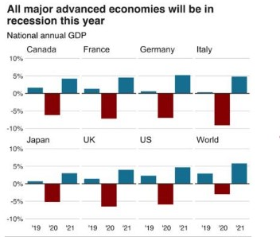
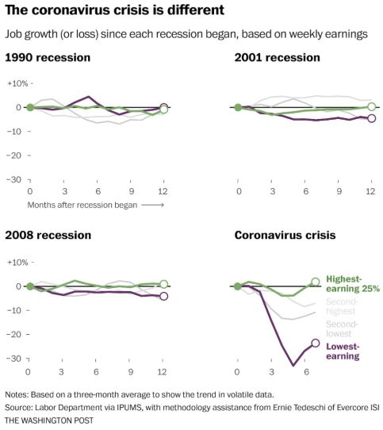

Since 1950
The swift and massive shock of the coronavirus pandemic and shutdown measures to contain it have plunged the global economy into a severe contraction. According to World Bank forecasts, the global economy will shrink by 5.2% this year. That would represent the deepest recession since the Second World War, with the largest fraction of economies experiencing declines in per capita output since 1870, the World Bank says in its June 2020 Global Economic Prospects.
Economic activity among advanced economies is anticipated to shrink 7% in 2020 as domestic demand and supply, trade, and finance have been severely disrupted. Emerging market and developing economies (EMDEs) are expected to shrink by 2.5% this year, their first contraction as a group in at least sixty years. Per capita incomes are expected to decline by 3.6%, which will tip millions of people into extreme poverty this year.
The blow is hitting hardest in countries where the pandemic has been the most severe and where there is heavy reliance on global trade, tourism, commodity exports, and external financing. While the magnitude of disruption will vary from region to region, all EMDEs have vulnerabilities that are magnified by external shocks. Moreover, interruptions in schooling and primary healthcare access are likely to have lasting impacts on human capital development.
“This is a deeply sobering outlook, with the crisis likely to leave long-lasting scars and pose major global challenges,” said World Bank Group Vice President for Equitable Growth, Finance and Institutions, Ceyla Pazarbasioglu. “Our first order of business is to address the global health and economic emergency. Beyond that, the global community must unite to find ways to rebuild as robust a recovery as possible to prevent more people from falling into poverty and unemployment.”
Under the baseline forecast—which assumes that the pandemic recedes sufficiently to allow the lifting of domestic mitigation measures by mid-year in advanced economies and a bit later in EMDEs, that adverse global spillovers ease during the second half of the year and that dislocations in financial markets are not long-lasting — global growth is forecast to rebound to 4.2% in 2021, as advanced economies grow 3.9% and EMDEs bounce back by 4.6%. However, the outlook is highly uncertain and downside risks are predominant, including the possibility of a more protracted pandemic, financial upheaval, and retreat from global trade and supply linkages. A downside scenario could lead the global economy to shrink by as much as 8% this year, followed by a sluggish recovery in 2021 of just over 1%, with output in EMDEs contracting by almost 5% this year.
Most people who contract COVID-19 recover. For those who do not, the time between the onset of symptoms and death usually ranges from 6 to 41 days, typically about 14 days. As of 22 July 2020, approximately 616,000 deaths had been attributed to COVID-19. In China, as of 14 June, about 80 percent of deaths were recorded in those aged over 60, and 75 percent had pre-existing health conditions including cardiovascular diseases and diabetes.
The first confirmed death was in Wuhan on 9 January 2020. The first death outside of China occurred on 1 February in the Philippines, and the first death outside Asia was in France on 14 February.
Official deaths from COVID-19 generally refer to people who died after testing positive according to protocols. This may ignore the deaths of people who die without having been tested. Conversely, deaths of people who had underlying conditions may lead to overcounting. Comparison of statistics for deaths for all causes versus the seasonal average indicates excess mortality in many countries. In the worst affected areas, mortality has been several times higher than average. In New York City, deaths have been four times higher than average, in Paris twice as high, and in many European countries, deaths have been on average 20 to 30 percent higher than normal. This excess mortality may include deaths due to strained healthcare systems and bans on elective surgery.
The following table list the most affected countries with their death rates.| Rank | Country | People Infected | People Deaths |
| 1 | America | 3830010 | 140906 |
| 2 | Brazil | 2118646 | 80120 |
| 3 | India | 1155191 | 28084 |
| 4 | Russia | 783328 | 12580 |
| 5 | South Africa | 373628 | 5173 |
I have honestly not stepped outside my house for three months, in the truest sense.I get my groceries and medical supplies delivered and get my dose of vitamin D from the balcony. I wasn’t exactly antisocial before the pandemic, but my social batteries did run out a lot quicker than others. I haven’t attended any birthday party or wedding celebrations (and no quick visit to the mall or the movies) in the past3 months and I feel that I am not capable of human interactions anymore. I am worried but also strangely relieved that I don’t have to dress up and make effortsto hold conversations anymore. It is scary, but I simply don’t want to go back to pre-pandemic social routine.
-Neha Anand
Whether the above-mentioned statement evokes a sense of empathy or confusion in you, we can all agree to the fact that the pandemic has changed the way we used to interact with the world around us, in more ways than one. With social distancing and quarantining being the new norms of survival during the infectious contagion, people across the globe are staying cooped up inside their homes, as much as possible.
We are terrified with the mere sight of another human in our vicinity, let alone murmuring a ‘bless you’ when someone sneezes or coughs. We don face masks and face shields as our armours in the battle. We carry hand sanitizers and aerosol disinfectants like our weapons ---ready to spritz and spray the invisible enemy away. A couple of months ago, we were almost enthusiastic and hopeful of the time when things would go back to “normal” that we were so used to. 7 months down the road, almost everyone is confined within the walls of their home and sharing throwback memories on Instagram.
We, humans, are adaptable beings, and hence, just like that, we have adapted to spending less than a fraction of time outside of homes. We are binge-watching and guilt-tripping all at once. We are getting increasingly comfortable with the idea of spending our whole day inside our homes, to the point where it may get scary.
It is scary because when the day finally comes when the restrictions are lifted, the malls have the season-end sale, the theatres start featuring the latest release and the swings in children parks become functional again-- we may not want to step outside anymore. While staying alone, may give you a greater perspective of your own emotions and may even reduce the need for constant validation, it also strips us from one of the very essence of what makes us human-- social interactions.
Additionally, extended amount of isolation can also trigger feelings of anxiety and depressive episodes in those with vulnerable mental health. This is precisely why we need human connections and find novel methods of connecting with our circle or group, especially during these testing times.
While physical distance continues to be a regular norm for an unforeseen future, one can always make use of social media platforms, voice calling and video calling to tackle loneliness. Even if you have started to feel incredibly comfortable in your cocoon, you may have to remind yourself that you always need your tribe with you, more so if you are living alone during a pandemic.
Remember, we are already battling a pandemic, let’s not create another one out of loneliness.